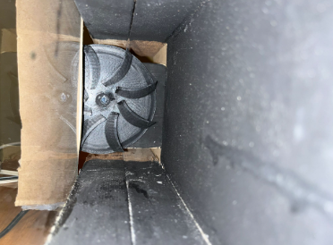
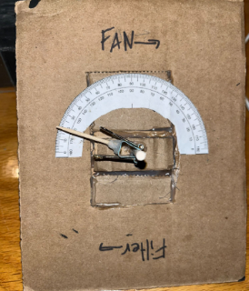

Overview
The goal of this project was to investigate the effect of vortex generator placement and long gap spacing on stall AOA mitigation. A NACA 2412 airfoil profile was chosen to target potential efficiency improvements in beginner aircraft such as on the Cessna 172. All data was gathered experimentally in a homemade flow visualization wind tunnel, at an airspeed of roughly 0.84m/s. This passion project turned science fair project was my first experience with research and flow control.
Tools Used
Pictures



Results
- Placed 2nd Overall for seniors at the Calgary Youth Science Fair (CYSF)
- $500 Cash Prize
- 1 of 15 teams out of ~600 projects displayed selected to advance to the Canada-Wide Science Fair (CWSF)
- Awarded a bronze medal at the CWSF, out of a total of ~350 projects
- Effectively demonstrated the impact of passive flow control techniques
- Effectively visualized the flow around an airfoil at different AOA, given limited resources and knowledge
Challenges + Solutions
- Figuring out how and where to begin (always the hardest part!)
- Designing and Manufacturing a home-made wind tunnel
- Visualizing airflow within wind tunnel
- Generating enough suction within the wind tunnel
- Designing an effective data acquisition method to measure stall AOA